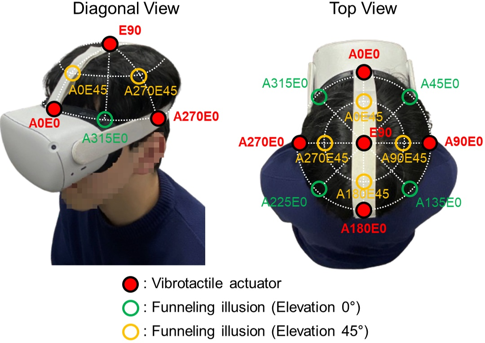

Sound and touch on the head
When cues share a location, do they need to serve the same purpose?
Virtual Reality (Springer) · Under review
Manuscript under review at Virtual Reality (Springer).

Research question
Vibration on the head can be felt on the skin and heard through bone conduction. Adding spatial sound creates a coupled sensory experience whose channels may contribute differently to a task.
Prototype and study
A head-mounted vibrotactile system and spatial audio are studied in localization experiments and a virtual task involving direction and event identification. The studies examine both the sound generated by vibration and the contribution of added audio.
Findings
The submitted studies suggest complementary task-level roles: tactile feedback helped reduce front–back confusion and elevation error, while sound supported semantic identification. Bone-conducted sound did not significantly impair localization in the tested conditions.

See the research
Manuscript
Perceptual Effects of Co-Located Vibrotactile and Auditory Cues on the Head
Virtual Reality (Springer) · Under review.